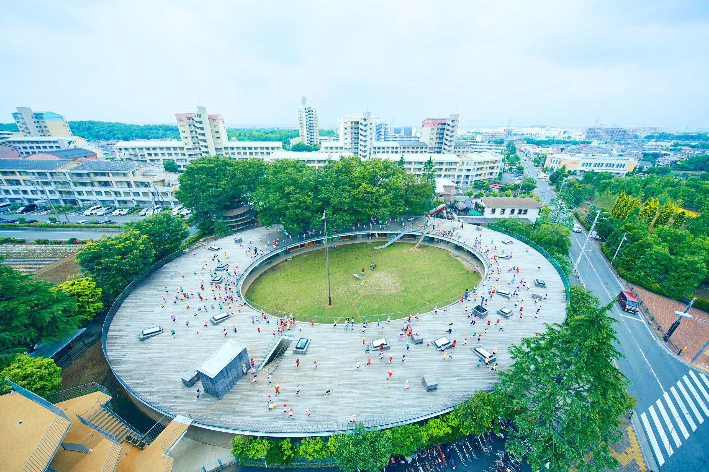
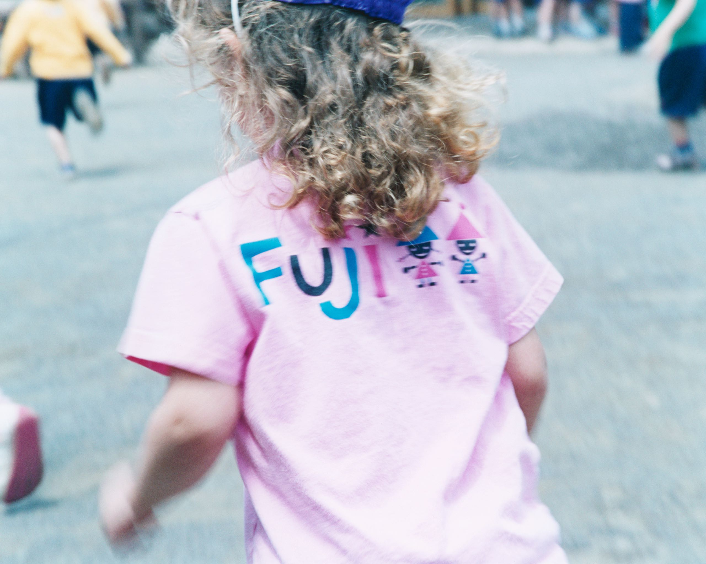
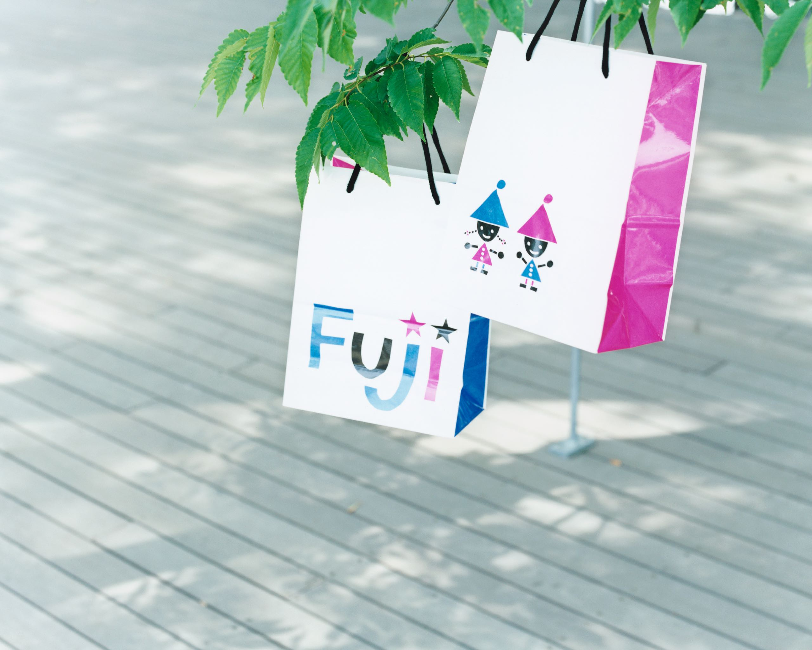

Kashiwa Sato proposed to an innovative renewal project for Fuji Kindergarten to create the grand concept that the “Architecture of kindergarten itself is one gigantic playground.” And he gave new vision to the architecture as one medium for fostering every child’s creativity. Taking advantage of existing big Japanese elm trees on the site, Kashiwa proposed a circular building with a wooden roof on which the children could run and play everyday. The shape was more than a design choice; the middle area was allocated to a central courtyard to foster communal togetherness..
The project realized new possibility for a kindergarten education in Japan, where the birth rate is falling, by offering not just a cold “box” but a warm “place” surrounded by abundant nature, such as trees, soil, and fresh air.
Many innovative ideas used in the kindergarten adhered to this concept. Ultimately, the circle shape building represents “infinity.” The roof serves as a second playground for children with more built-in equipment.
Kashiwa created paper cutout-like fonts and characters for the logo, the website, and the children’s T-shirt, which is not part of a typical kindergarten uniform. Representing the future of early childhood education under the concept of “Architecture of kindergarten itself is one gigantic playground, which fosters every child’s creativity,” this project was highly acclaimed internationally, earning the 2011 award for “Most Outstanding Facility” from the OECD Center for Effective Learning Environments (CELE) and numerous other global architectural and educational awards.